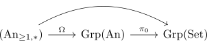

group seifert kampen for Anima
Proposition
Let $I$ be a weakly simply connected category and
a diagram in pointed, connected anima. Let $I \rightarrow \mathrm{An}$ be the composition with the forgetful functor $\mathrm{An}_* \rightarrow \mathrm{An}$. Then the fundamental group functor preserves this colimit and the map $\mathrm{colim}_{I} \rightarrow \mathrm{colim}_{I_*}$, i.e., the map from the colimit in $\mathrm{An}$ to the colimit in $\mathrm{An}_*$ induces an isomorphism on $\pi_1$.
Proof
a) $\pi_1$ isomorphism between $\mathrm{colim}_I$ and $\mathrm{colim}_{I_*}$
this follows from blakers massey and n-connected maps under pushout & the pushout lemma for infinity colimits in the coslice category
b)
I think one can even show this for roughly 2-connected diagrams by applying the truncation functor.
Note that by connected colimit of connected anima as connected anima the colimits $\mathrm{colim}_{I}, \mathrm{colim}_{I_*}$ lands inside $\mathrm{An}_{\geq 1}$. In particular, $\mathrm{colim}_{I_*}$ is the colimit of $\mathrm{An}_{\geq 1,*}$.
But there is also another name for $\mathrm{An}_{\geq 1,*}$, namely $\mathrm{CGrp}(\mathrm{An})$ (cf. anima valued groups and connected pointed anima) where the loop functor is the desired equivalence. So consider

where the first functor preserves colimits as it is an equivalence and the second one is a left adjoint (after observing: product preserving left adjoint induces adjunction on category of cartesian groups & pi_0 of Anima preserves products)